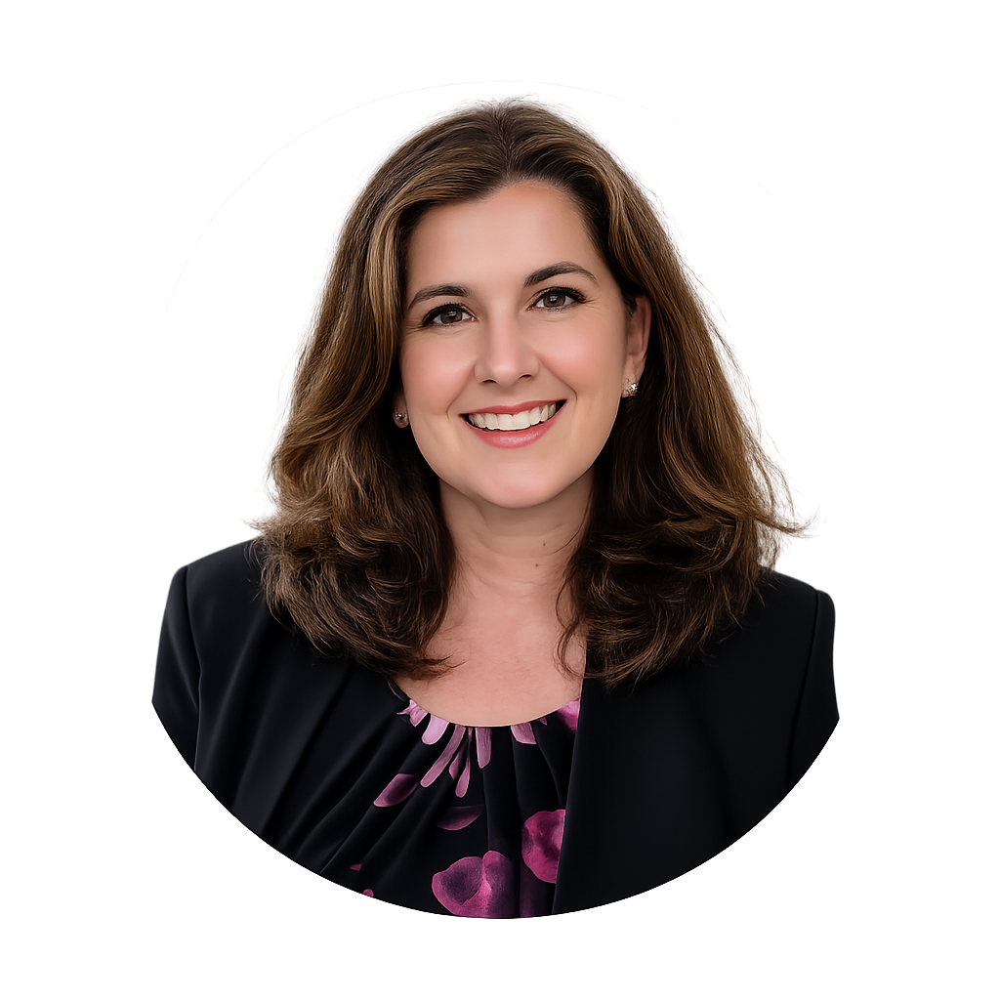
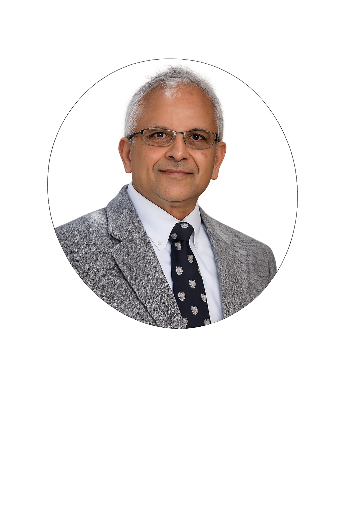

The people behind Thinking Automata

It started with a question: what if a university's AI could open a conference? While planning the 2026 AI@AU / Team Science Series: Building Research Communities in AI (Showcase & Workshop), Christine envisioned opening the event with something entirely new — an AI-generated keynote speaker that could represent a university's research community in a modern, engaging, and scalable way. That question became AUBRIA.
Christine shared the idea with Dr. Jennifer Kerpelman, who helped shape the concept into a clear and achievable vision. She then carried the project forward to Dr. Gerry Dozier — moving it from "what if" to "let's build it" and ensuring it had the institutional support it needed to succeed.

Dr. Dozier assembled the student development team and guided the technical build from the ground up — combining AI generation, storytelling, and media production into a conference-ready keynote experience. He continues to advise the team as the platform evolves and expands to serve additional universities and organizations.

With guidance from Dr. Jennifer Kerpelman, Dr. Hari Narayanan, and Christine Cline, the student team refined the platform into a polished, credible keynote experience — one built with care for clarity, institutional pride, and a visual identity that can be adapted for any university's brand.
We are the student developers behind Thinking Automata — a passionate team focused on Artificial Intelligence, Agentic AI, and Cybersecurity. We designed, built, and deployed AUBRIA as our first AI research ambassador, and we are now open to building custom AI ambassador systems for universities, departments, and organizations of any kind. Whether it's a conference keynote, a research showcase, or a standing presence for your institution — we can build it. Affiliated with AI@AU and AU-CAICE.